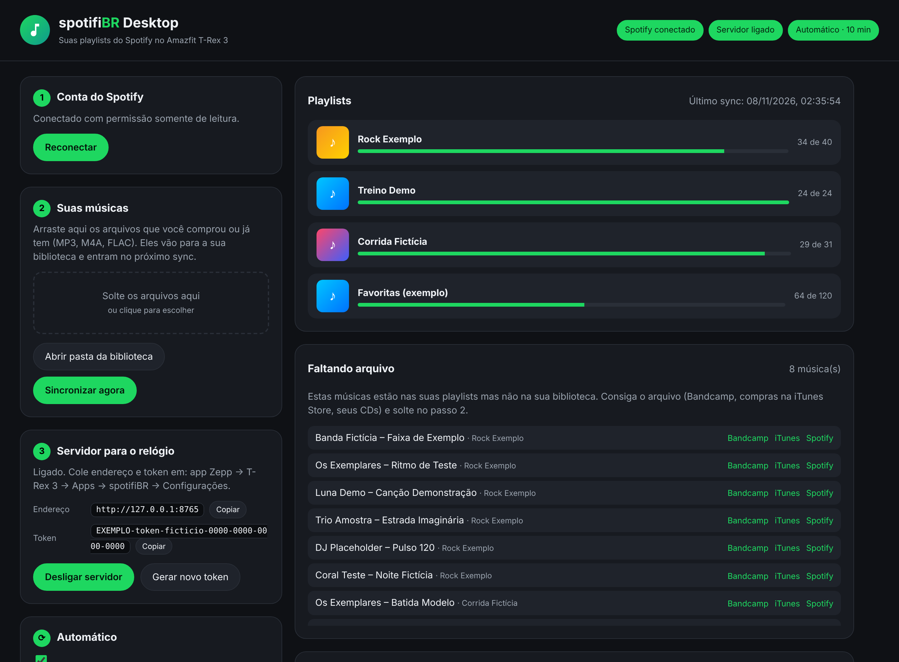

spotifiBR
Suas playlists do Spotify, offline no Amazfit T-Rex 3.
App no relógio + spotifiBR Desktop no computador
1 · Como funciona
A ideia em uma frase
O Spotify diz quais músicas. O áudio vem dos seus arquivos.
+
💽
Seus arquivosMP3, FLAC, M4A
💻
spotifiBR Desktopcasa a playlist com os arquivos, sozinho📱
iPhoneapp Zepp leva os arquivos pelo Wi-Fi⌚
RelógiospotifiBR baixa só o que é novo e toca offline
2 · De onde vêm as músicas
Por que não baixa direto do Spotify (nem do YouTube)?
O áudio do Spotify é criptografado, e copiar música inteira sem licença (do YouTube, por exemplo) viola direitos autorais e os termos de uso.
💽 Seus arquivos
CDs, downloads antigos, sua coleção
🎸 Bandcamp
Compra em MP3 ou FLAC, sem proteção
🍎 iTunes Store
Compras avulsas (não a assinatura Apple Music)
🎶 Livres
Jamendo, Free Music Archive
📝 O Desktop mostra a lista “Faltando arquivo” com botões de busca no Bandcamp e no iTunes. Comprou? Arraste o arquivo para o painel.
3 · Instalação 1/3 · spotifiBR Desktop no computador
Instale e abra o spotifiBR Desktop
$ pip install -e ".[tags]"
$ spotifibr
✓ painel aberto no navegador
1
Configurações: cole o Client ID do Spotify, as playlists e a pasta das músicas
2
Clique em Conectar Spotifypermissão somente de leitura
3
Clique em Sincronizar agora
127.0.0.1 · spotifiBR Desktop

3 · Instalação 2/3 · app no relógio pelo iPhone
Instale o spotifiBR no relógio
1
Ative o modo desenvolvedor no app ZeppPerfil → Configurações → Sobre → toque 7× no logo
2
No computador, gere o QR codenpm i -g @zeppos/zeus-cli → zeus login → zeus preview
3
No iPhone: Developer Mode → Scanleia o QR; o spotifiBR aparece no relógio
!
Antes: troque o appId em zepp-app/app.json pelo da sua conta em console.zepp.com
QR gerado pelo zeus preview
(ilustrativo)
3 · Instalação 3/3 · conectar relógio e computador
Ligue o relógio ao computador
No Desktop: Ligar servidor
Endereço: http://192.168.0.10:8765 (exemplo)
Token: EXEMPLO-token-ficticio… [Copiar]
No app Zepp: Perfil → T-Rex 3 → Apps → spotifiBR → Configuraçõescole o endereço e o token; status verde = pronto
Na 1ª vez o iPhone pergunta sobre a rede localtoque em Permitir

4 · Uso no dia a dia
Músicas novas no relógio, quase sem fazer nada
1
Adicione músicas às playlists no Spotifycomo você já faz
2
Arraste para o Desktop os arquivos que faltama lista “Faltando arquivo” mostra quais
3
O modo Automático sincroniza sozinhoquando entra música nova na pasta e a cada X minutos
4
Abra o spotifiBR no relógiobaixa só o que é novo, com progresso e novas tentativas
💡 Deixe o app Zepp aberto no iPhone até aparecer “Sincronização concluída”.
sincronizando: “3 de 8 · enviando 60%”
5 · Ouvir
Escolha, toque, corra
3. Continua com a tela apagada
🎧 Conecte os fones Bluetooth pelo menu do relógio. Os botões laterais de cima e de baixo trocam a faixa.
6 · Segurança
Sua conta protegida
O login do Spotify fica só no seu computadorpermissão somente de leitura; celular e relógio nunca recebem a senha nem o token da conta
O Desktop só abre no próprio computador (127.0.0.1)link com chave aleatória por sessão; ninguém da rede consegue mexer nele
Token forte (256 bits) só para as músicaso servidor entrega apenas as músicas da lista, nunca outros arquivos do PC
Fora de casa? Use o Tailscale (HTTPS)Perdeu o celular? Botão Gerar novo token no Desktop
spotifiBR
Guia completo: COMO_USAR.md · Segurança: SECURITY.md
Projeto pessoal · sem afiliação com Spotify ou Zepp/Amazfit
Relógio ilustrativo · músicas, artistas, playlists, endereço e token fictícios
DADOS FICTÍCIOS